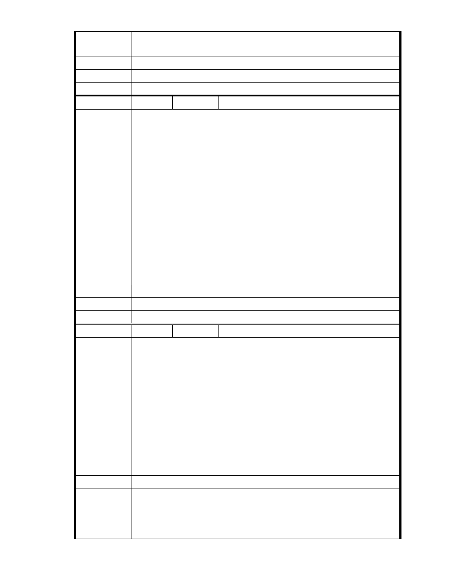

陳情意見：
建議委員應親至現場會勘、實地體驗後再審議本案。
建議辦法
市 府 說 明 相關陳情意見將納入本案審查人民意見，依法定程序辦理。
委 員 會 決 議 同編號 1。
編
號 70
陳情人 市長信箱（ MA201012030125 ）
郝市長:
陳情理由
您好! 慈濟於內湖已經在地推動多年的環保回收，用地也是在大馬路
旁，周圍早已被各式住宅包圍，為何還有外縣市奇奇怪怪的宣稱環保人
士反對，說要環保? 內湖以及全台各地還有更多真正破壞自然生態，需
要審慎環評的建案沒人關心，卻集中在一塊大馬路旁，周圍多年以來早
已住宅林立的水泥基地? 太可疑了! 何況這些所謂的反對環保人士，根
本不是真正的內湖人，也未曾為內湖真正做出任何貢獻，是否是有幕後
黑手，有其他目的，還是覬覦善心人士捐給慈濟的這塊地呢? 大家都知
道因為鄰近大湖公園，如果是建豪宅許多人將有利可圖，但內湖建案已
經很多，希望郝市長千萬不要屈服有心人士的惡勢力，同我們正港、正
牌的內湖居民一同支持慈濟! 拜託!
內湖區大湖里居民 郭先生
建議辦法
市 府 說 明 相關陳情意見將納入本案審查人民意見，依法定程序辦理。
委 員 會 決 議 同編號 1。
編號
陳情理由
71 陳情人 市長信箱（ MA201012030142 ）
反對慈濟內湖開發案將保護區變更為社會福利專用特定區。
1.極端氣候越趨劇烈的今天，我們不要變成下一個蘇澳或是蘇花公路。
2.希望慈濟可以「在對的地方，做對的事情」，慈濟應另覓開發基地。
3.希望市政府不要因為是慈濟，就違背台北市對保護區該有的態度。正
因為慈濟是公益團體的模範生，我們更應該用嚴格的標準來檢視它，以
共同協助慈濟往更好的方向成長發展，而不是姑息他錯誤的行為。
4.我住內湖，以前不知道這件事，也沒有相關單位通知我們家，雖然我
家離大湖還有段距離，但我仍要表達我的意見。市長辦花博的決定與結
果，很謝謝他給予我們一個休閒的去處，希望在這件事上不要讓內湖人
失望。
陳美玉 99/11/26
建議辦法
一、本案申請範圍於慈濟購得前已遭非法填土，實不具保護區之功能，
市府說明
今申請單位欲興辦社會福利事業，故依法辦理都市計畫變程序；目
前申請方案較先前方案已大幅降低開發強度、調整使用項目並承諾
大面積滯洪設施等回饋事項，顯示申請單位欲改善現況之誠意。
- 64 -